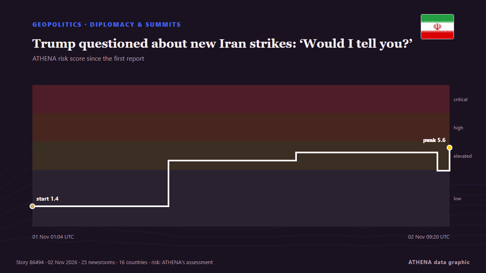

Διπλωματία & σύνοδοι
| 20 Οκτ | 0 |
|---|---|
| 21 Οκτ | 0 |
| 22 Οκτ | 0 |
| 23 Οκτ | 0 |
| 24 Οκτ | 0 |
| 25 Οκτ | 1 |
| 26 Οκτ | 1 |
| 27 Οκτ | 1 |
| 28 Οκτ | 4 |
| 29 Οκτ | 3 |
| 30 Οκτ | 8 |
| 31 Οκτ | 5 |
| 1 Νοε | 1 |
| 2 Νοε | 0 |
Οι τίτλοι των ειδήσεων παρουσιάζονται στα αγγλικά, όπως δημοσιεύτηκαν.

Trump questioned about new Iran strikes: ‘Would I tell you?’
Expectations are growing that the US President will order new strikes against Iran as soon as this week. από Sydney Morning Herald
Trump says Flavio Bolsonaro can stay in US 'as long as he wants'
The former conservative presidential candidate left Brazil after losing the election to leftist incumbent Luiz Inacio Lula da Silva. από Free Malaysia Today
US Embassy in Russia warns citizens in Moscow of potential 'mass casualty event' near museum
"The US Embassy in Moscow is aware of a credible threat of a mass casualty event TODAY, October 31, at the Tsaritsyno Museum Reserve in Moscow," the embassy wrote. από The Jerusalem Post
Iranian negotiators in Doha to continue talks to end the US-Iran war, official says
Iranian negotiators were in Doha on Sunday for a third consecutive day of talks with Qatari mediators aimed at pushing for a deal to end the US-Israeli war on Iran, an official briefed on the… από Cyprus Mail
Qatari mediators hold over 12 hours of talks aimed at renewing direct US-Iran negotiations - report
A diplomatic source told Axios that Qatari mediators were in contact with the White House over the course of Friday’s talks and that “there was positive progress" in the effort to reach a deal. από The Jerusalem Post
G20 FM meeting ends without joint communique amid deep divisions
Foreign ministers from the Group of 20 leading economies are gathering in Atlanta on October 30-31 for talks expected to expose continuing divisions among Western governments over Russia's war in… από RFE/RL (English)
Evacuees from Russian-occupied Oleshky reunited with relatives in Ukraine
Russia and Ukraine have not specified how many people chose to leave the city. από The Irish News (Belfast)
Rapper Nicki Minaj joins Trump onstage at Michigan rally
The Super Bass singer is the latest big name to campaign in Michigan, where a tight Senate race is playing out ahead of the 3 November midterms. από BBC News
Rubio says US yet to decide on new Iran strikes
ATLANTA: US President Donald Trump has not made a decision about fresh strikes on Iran amid stalled peace talks, US Secretary of State Marco Rubio said Saturday. από Business Recorder
Russian foreign minister Lavrov arrives in US for G20 meeting
Russian Foreign Minister Sergey Lavrov has arrived in the US to attend a G20 meeting in Atlanta amid global tensions on various issues. από Arab News
G20 foreign ministers' meeting enters final day in US amid global tensions
Secretary of State Marco Rubio hosting event in city of Atlanta. από Anadolu Agency (English)
Aid operation and evacuations in Oleshky amid brief truce agreed to by Russia and Ukraine
A humanitarian mission entered the devastated city of Oleshky on Friday, officials said, as Russia and Ukraine observed the most significant truce of the 4½-year war that began with Moscow's… από PBS NewsHour World
Nations commit to get nature goals back on track
Nearly 200 nations struck hard-fought agreements Friday at a U.N. biodiversity summit, but the outcome was accompanied by disappointment over missed opportunities to address humanity's destructive… από Phys.org
Qatari Mediators Return to Tehran in Push for US-Iran Peace Deal
Qatari mediators returned to Tehran on Friday to advance efforts for a US-Iran agreement, but disagreements over nuclear negotiations, oil sanctions and a US port blockade continue to obstruct a… από Khaama Press
Starved residents of Russian-occupied Oleshky return to Ukraine during a rare local ceasefire
The six-day ceasefire was reached after mediation efforts by US first lady Melania Trump and with the pope’s help. από The Straits Times
‘We all know you are the aggressor’ in Ukraine, Miliband tells Russian envoy
The Foreign Secretary stressed the need to deprive Vladimir Putin ‘of the revenues that perpetuate this barbaric war’. από Evening Standard (London)
Oil jumps 2%, settles at 6-month highs on fears of escalation in Iran
Oil prices jumped more than 2 percent on Friday and settled at their highest levels since the end of April, as traders braced for a potential escalation in the Iran war after the U.S. midterm… από The Korea Times
Trump reverses decision to cancel Kansas and Iowa rallies before midterms
The president cancelled the events in favor of tele-rallies, as Republicans face a fight to retain control of Congress Donald Trump cancelled, and then promptly uncancelled, two in-person rallies in… από The Guardian
Greek PM calls Turkey-Libya maritime deal 'void;' calls for global truce after Black Sea attacks
UNITED NATIONS, Oct 29 - Greek Prime Minister Kyriakos Mitsotakis said on Thursday that the recently signed maritime deal between Libya's eastern parliament and Turkey was \"blatantly illegal, null… από The Straits Times